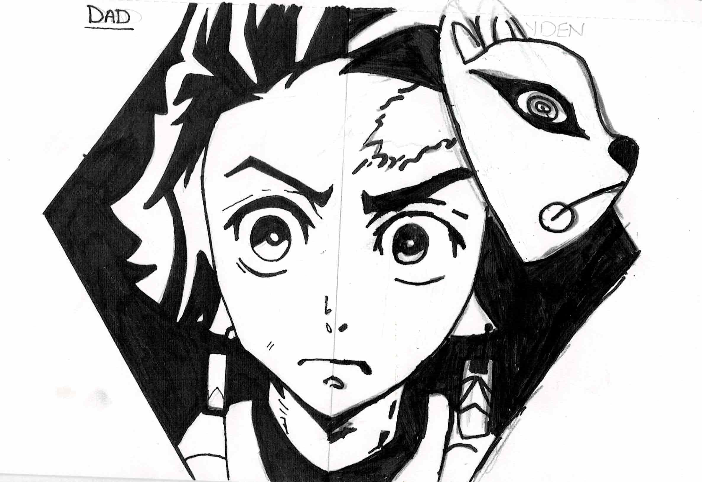
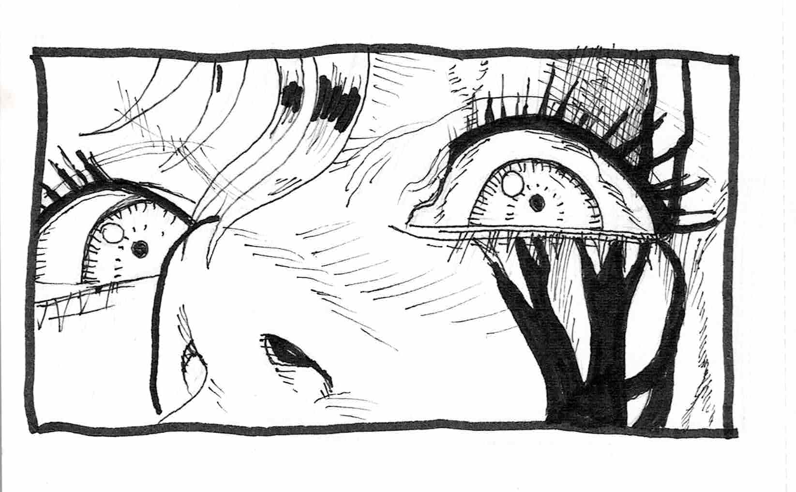
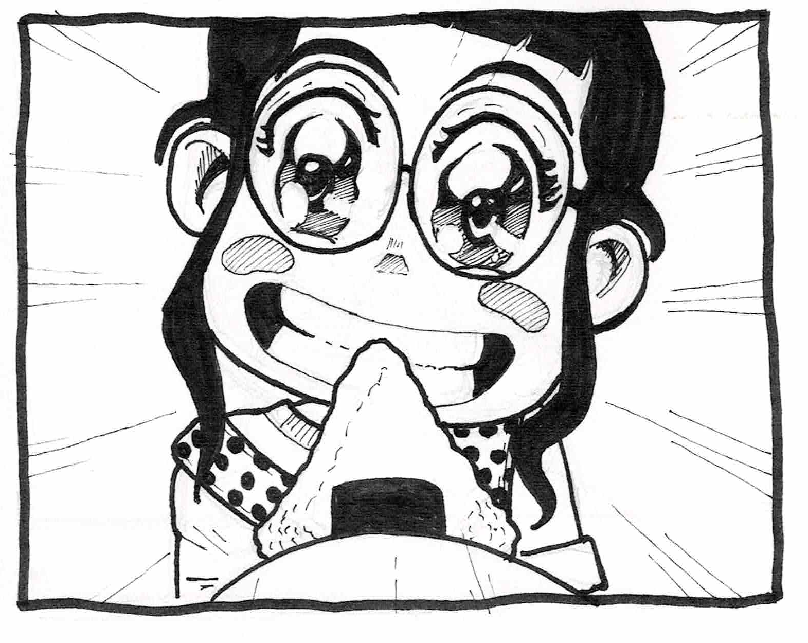
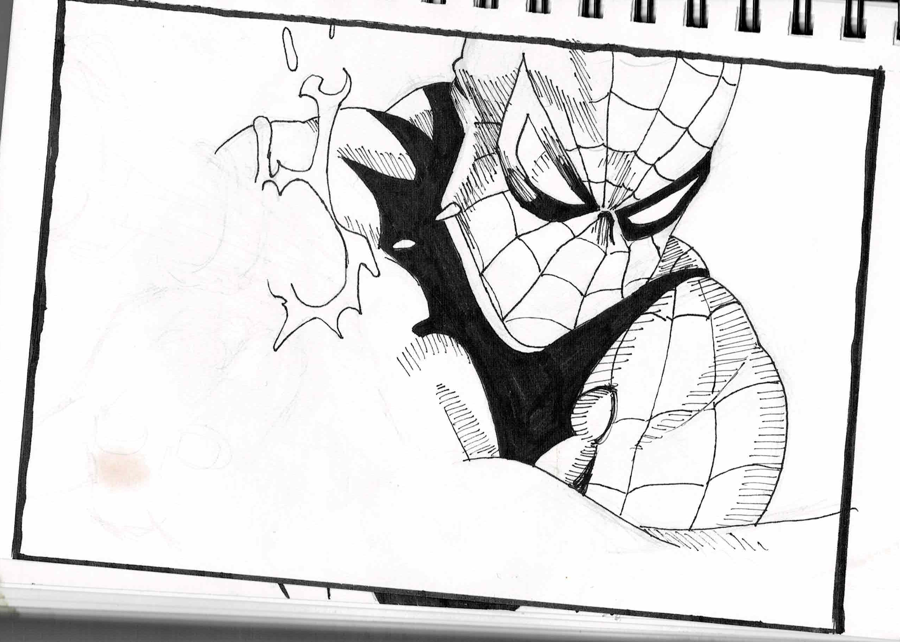

Dual Identity
An ink portrait study using strong contrast and stylized anime-inspired line work to explore identity, symbolism, and character design.
Portfolio Section
This section highlights traditional ink drawings and expressive illustration work that expand beyond digital design. These pieces showcase foundational drawing skills, character expression, comic-inspired line work, and visual storytelling through traditional media.

Gallery
A selection of ink-based drawings exploring stylized portraiture, horror-inspired imagery, expressive character design, and comic book influence. These works reflect my interest in strong contrast, deliberate line work, and storytelling through form and expression.

An ink portrait study using strong contrast and stylized anime-inspired line work to explore identity, symbolism, and character design.

A horror-inspired panel study focused on emotional tension, exaggerated anatomy, and expressive mark-making through layered ink lines and crosshatching.

A character expression study centered on exaggerated emotion, personality, and playful visual energy through bold ink work and simplified framing.

A comic-style figure study exploring dynamic pose, anatomy, costume rendering, and black-and-white ink treatment inspired by superhero illustration.
Creative Approach
These works demonstrate hand-drawn fundamentals such as line control, shape construction, contrast, and composition — skills that strengthen every area of my visual design work.
Even outside of digital tools, I am drawn to pieces that communicate mood, tension, humor, and personality through expression and visual framing.
Including traditional work in my portfolio reflects a broader creative range and shows that my process is grounded in both design thinking and illustration.
Next Steps
Return to the main portfolio to view branding, digital art, photography, photo-manipulation, and additional design projects.